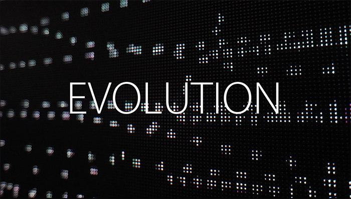
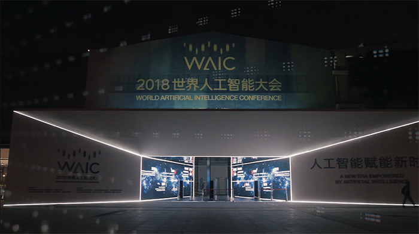
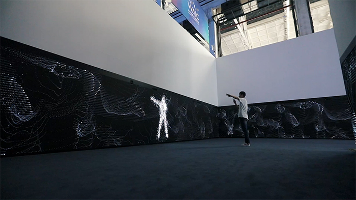
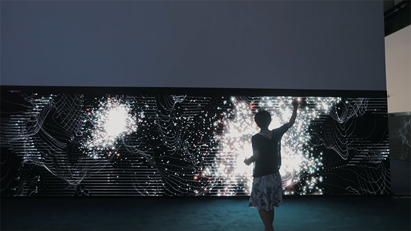
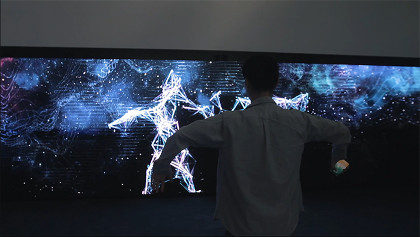

Works
>>
Back
Evolution
进化
# 2018 WAIC 世界人工智能大会
2018年9月17日，以“人工智能赋能新时代”为主题的2018年人工智能大会这次在上海徐汇西岸打开直通“未来AI世界”的大门。
此次分号C团队收到西岸艺术馆与上海音乐学院的委托，为2018世界人工智能大会制作命题为“进化”EVOLUTION的交互式艺术长廊，作为主会场入口装置，同时也是世界人工智能大会的“入口”。为每一位从世界各地前来参加大会的贵宾制造科技感与仪式感。
    
主创团队：
；c（分号C）：生成视觉设计/交互设计/传感器通信/融合
荆盼文（动画设计师）：背景视觉动画
Nencol（新媒体交互声音设计师）：宣传视频BGM配乐
Wechat @N111en
特别感谢：
KOLMO | 兽炭 （宣传视觉呈现）
张涛（双雨视听 ）：LED设备与技术支持
上海音乐学院师生（数字与媒体）